Why TheScoreLoom™
Each ensemble has its own character, and my goal is to highlight these unique traits. I created TheScoreLoom™ in response to the growing requests for new arrangements developed for specific ensembles.

Musicians’ Different Levels
Less experienced players should not be overwhelmed, and advanced musicians should remain engaged. The project aims to make rehearsals easier by adapting the music to the musicians' levels

Three Types of Scores
Ready to Play are standard pieces for any ensemble, available via licensed platforms. Tailored Scores are developed for your ensemble, published through authorized channels. Bespoke Scores are exclusive, fully customized works, exclusive to the client with proper permissions.

Handcrafted Scores
All work is handcrafted, and delivery times vary according to demand. Clients will always be informed of expected timelines at the time of order

Copyright
Copyright is important to TheScoreLoom™. Standard titles are licensed through ArrangeMe by Hal Leonard. Tailored scores for non-standard titles are developed for authorized publication, while bespoke works require permission from the original publisher

About Me
I am an independent composer, raised in the world of wind bands. I'm an organist, graduated in contemporary composition and orchestral conducting. I enjoy mathematics, physics, classic elegance, gardening and good food